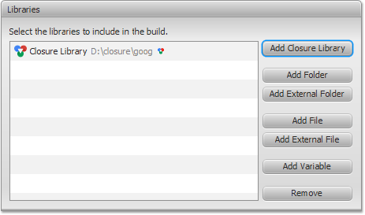

Configure Compiler for Closure Library
This tutorial introduces and lays the groundwork for JavaScript
development and compiling with Closure Library using Closure FX
Builder.
The following step by step instructions show how to
configure Closure Compiler for building JavaScript code used Closure
Library.
Closure FX Builder automates building of JavaScript code that uses
Closure Library.
You do not need to use additional build scripts to get dependency tree and pass it to the compiler by hand.
You do not need to use additional build scripts to get dependency tree and pass it to the compiler by hand.
Get Closure Library
Download the library as a zip from the Closure Library website:
https://code.google.com/p/closure-library/downloads/list
Unpack the archive into the directory of your choice.
Closure Library is ready to use.
https://code.google.com/p/closure-library/downloads/list
Unpack the archive into the directory of your choice.
Closure Library is ready to use.
Notice: You also can check out Closure Library from the following
repository at Google Code:
https://code.google.com/p/closure-library/source/checkout
https://code.google.com/p/closure-library/source/checkout
Getting the Sample Code
In this tutorial we will use Notepad example.
Let's create Notepad directory with the following structure:
Let's create Notepad directory with the following structure:
- The JavaScript source files are laid out in one directory "src".
- The output file is in another directory "bin".
- The HTML page is laid out in the root directory.
- Use these links to view the JavaScript source file and the HTML page that are used in this tutorial:
Create "Closure Project"
Read Create your first
Build Configuration to create a new configuration.
Initialize Closure Library
You can define any number of Closure Library definitions.
Therefore, you can use different versions or custom builds of the
library.
- Click
 Settings button to open Closure FX
Preferences dialog.
Settings button to open Closure FX
Preferences dialog.
- Select Installed Closure
Libraries tab.

- Click Add... button to open Add Closure Library dialog.
- Enter the library's name of your choose. For example: Closure Library
Click Add... button and locate to the goog folder inside Closure Library installation directory: ~/closure/goog

- Click OK and then Apply button to save configured library.
- Go to your build configuration and choose Build Path tab on Compiler page.
- Click Add Closure Library in the Libraries section.
- Choose the library and click OK.

Notice triangle next to the library's path.
The triangle defines that the builder will look for the JavaScript files with goog.provide only.
The triangle defines that the builder will look for the JavaScript files with goog.provide only.
Configure JavaScript Sources
- Go to Build Path tab on the Compiler page. The page contains four sections: Sources, Libraries, Order And Externs and Output Location.
- Click Add... button in the Source section.
- Choose a folder with source files and click OK.

- Define Output file and Output folder in the Output
Location section.

Configure Compiler's Options
Ensure that you have configured the following options to be sure
that Closure Compiler will build the sources correctly.
- Go to Input/Output Language section on Basic tab.
- Ensure you have chosen Enforce
Closure style rules and conventions and Process
Closure primitives checkboxes.
- Go to Compilation Warnings section on Checks tab.
- You can configure Compilation Warnings just as you want.
Nevertheless, there are several options which are extremely
useful for Closure-based code.
Ensure you have chosen ERROR/WARNING severity level for brokenClosureRequiresLevel, checkProvides and checkRequires checks.